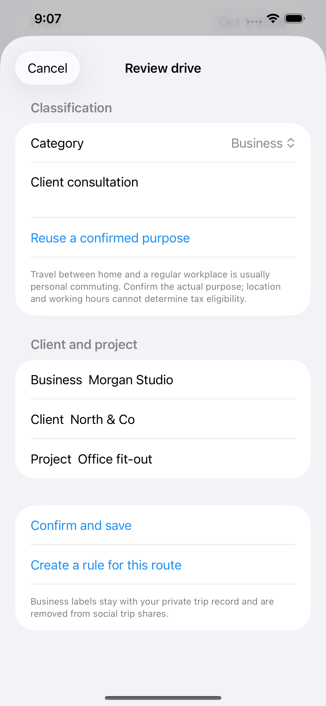
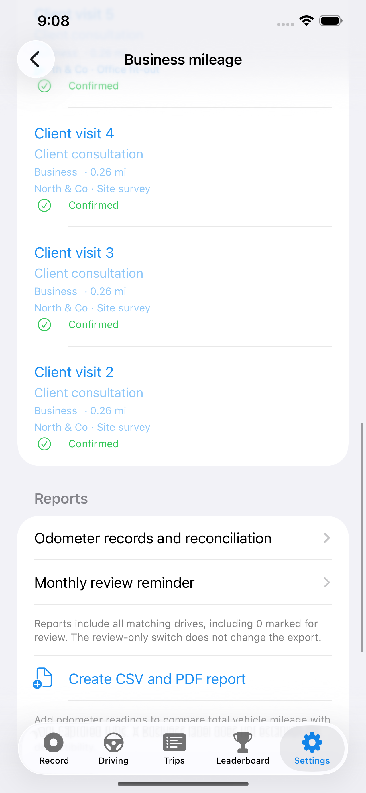

A head start on familiar drives.
Set a route rule or let RoadBook learn from three consistent, confirmed trips. Automatic decisions remain visible for review.
RoadBook Business Pro · Development preview
From a client visit to a saved mileage report. We’re building a clearer monthly routine for independent professionals who drive for work.
Business Pro plans for 1, 3, 5, 10 and 20 vehicles are in development. The new shared vehicle allowances and per-drive access checks are being tested before release. Pricing and availability will follow validation.
Explore the previewBuilt inside RoadBook for iPhone. Pro and Business Pro will offer the same vehicle capacities. Pro focuses on personal driving; Business Pro adds work-mileage tools. Existing subscriber changes will be explained before they take effect.

Set a route rule or let RoadBook learn from three consistent, confirmed trips. Automatic decisions remain visible for review.
Review the category and purpose. Add a business, client and project, then reuse those labels in your reports.
Filter a period, create CSV and PDF copies, and save a separate report version. Later trip edits leave earlier exports intact.

Made for your monthly routine
Reports cover recorded drives in the selected period. Add actual odometer readings for the vehicle and interval. A partial interval is not a full annual record, and a report does not determine tax eligibility. GPS and background recording depend on permissions and system conditions.
Planned vehicle options
1 vehicle · 3 vehicles · 5 vehicles · 10 vehicles · 20 vehicles
One Business Pro range will share its vehicle recording capacity across the subscription’s devices. Recording an additional vehicle beyond your plan’s allowance will require an upgrade. Personal and business vehicles count together: one personal car plus three work cars needs a five-vehicle plan. Pro will offer the same vehicle options for personal-driving tools. The screens above show the earlier Business beta; they do not demonstrate the new vehicle limits. Final localized prices will appear in the app when the new plans become available.
Business tools will apply to qualifying drives recorded during Business coverage or individually unlocked with trip credits. A subscription upgrade alone will not unlock earlier Pro trips. Covered and purchased trips plus saved reports will remain available after ordinary cancellation. Credits will not add vehicle capacity.
Contact RoadBook through SupportA drive’s Business or Personal category describes its purpose. A separate access label shows whether its Business tools are included, unlocked with a credit, still being checked, or outside coverage.
Registered vehicles can record through the remembered subscription term. After the end date, connect to check renewal; if you’re offline, there is up to 24 hours of extra recording access. Registering another vehicle needs a connection.
The current RoadBook app offers a personal drive journal and mileage tools. We’re planning to move work-mileage features into Business Pro. Existing Pro customers will see a dated notice and keep mileage tools through their current paid term. Their existing vehicle allowance, recorded trips and saved reports will be retained.
View the current RoadBook appOur validation will compare missed drives, distance error, incorrect business labels and time spent reviewing. We aren’t claiming a verified accuracy advantage over other mileage apps.